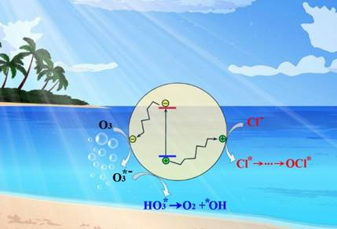

Recent Research Results
 Plasmonic enhancement using Au nanohole array
Plasmonic enhancement using Au nanohole array
Plasmon-induced hot carriers have recently attracted considerable interest, but the energy efficiency in visible light is often low due to the short lifetime of hot carriers and the limited optical absorption of plasmonic architectures. To increase the generation of hot carriers, we propose to exert multiple plasmonic resonant modes and their strong coupling using a metal–dielectric–metal (MDM) nanocavity that comprises an Au nanohole array (AuNHA), a TiO2 thin film and an Au reflector. Unlike common MDM structures with only the Fabry-Pérot mode in the dielectric layer, AuNHA as the top layer is special because it excites the localized surface plasmon resonance (LSPR) mode in the Au nanoholes and launches the gap surface plasmon polariton (GSPP) mode in the Au reflector surface. The spatial field overlapping of the three resonance modes enables strong mode coupling by optimizing the TiO2 thickness, which leads to notably enhanced average IPCE (∼1.5%) and broadband photocurrent (170 μA·cm−2)...
Nanoscale 13(5), 2731-3310, 2021. (Inside front cover)
DOI: 10.1021/nn402598e
Photocatalytic ozonation for sea water decontamination
Polluted seawater is difficult to treat due to salt ions. Here photocatalytic ozonation is found highly efficient since the dissolved O3 molecules rapidly scavenge photoexcited electrons, resulting in the synergistic effect of photocatalysis and ozonation.
Journal of Water Processing Engineering 37, 101501, 2020.
DOI: 10.1016/j.jwpe.2020.101501
 Aberration-free aspherical in-plane tunable liquid lenses by regulating local curvatures
Aberration-free aspherical in-plane tunable liquid lenses by regulating local curvatures
Aberration is a long-standing problem of focal lenses. This paper reports an in-plane optofluidic lens that compensates the spherical aberration during the tuning of focal length. Experiments using a silicone oil obtain the tuning of focal length over 500–1400 mm and a longitudinal spherical aberration (LSA) of ∼3.5 mm, only 1/24 of the LSA (85 mm) of the spherical lens. Fine adjustment of applied voltages allows the elimination of LSA to obtain the aberration-free tunable lenses. It is the first time that local curvature regulation is used to compensate for the aberration within one in-plane liquid lens.
Lab on a Chip 20(5), 31 Jan 2020.
Video demo
of aberration control.
DOI: 10.1039/C9LC01217F
 Microfluidic immobilized enzyme reactors for continuous biocatalysis (long review, front cover)
Microfluidic immobilized enzyme reactors for continuous biocatalysis (long review, front cover)
The use of microfluidic immobilized enzyme reactors (μ-IMERs) offers several advantages over traditional technologies in performing biocatalytic reactions, such as low energy consumption, rapid heat exchange, fast mass transfer, high efficiency and superior repeatability. In this review, the strategies of employing μ-IMERs for continuous biocatalysis will be investigated by a top-down approach.
Reaction Chemistry & Engineering 5(1), 01 Jan 2020 (Front cover)
DOI: 10.1039/C9RE00217K
 Microfluidic reactors for continuous artificial synthesis of glucose precursor
Microfluidic reactors for continuous artificial synthesis of glucose precursor
Ribulose-1,5-bisphosphate carboxylase/oxygenase (RuBisCO) is a difficult enzyme to work with. Here, the authors covalently immobilized it in a microfluidic reactor to enhance its storage/thermal stabilities and reusability, which enabled the continuous artificial synthesis of glucose precursor.
Nature Communications 10(4049), 06 September 2019.
DOI: 10.1038/s41467-019-12089-6
 Tunable lenses with dual air/liquid interfaces
Tunable lenses with dual air/liquid interfaces
In-plane tunable liquid lenses are formed by using two air/liquid interfaces, whose curvatures are actuated by dielectrophoresis force and tuned symmetrically or asymmetrically for biconcave to biconvex.
Lab on a Chip 18(24), 3849 – 3854, 2018.
Video demo
of symmetric tuning.
Video demo
of asymmetric tuning.
DOI: 10.1039/c9lc01217f
 Plasmonic black absorbers
Plasmonic black absorbers
TiO2-covered rough Au film is used as a plasmonic black absorber to drastically enhance the photocurrent in sunlight.
Advanced Optical Materials 5(1) 1600399, 2017 (back cover).
DOI: 10.1002/adom.201600399
Laser shapes the light beam in liquid
Laser irradiation creates a thermal gradient and thus a graded lens in the liquid medium, which enables to converge or diverge the light beam in the liquid in an agile, no contact, remote manner.
Lab on a Chip 16(1) 104 – 111, 2016 (inside back cover).
Video demo
of tunable thermal lens.
DOI: 10.1039/C5LC01163A
 Digital ultrafine optical comb
Digital ultrafine optical comb
Ultrafine optical frequency comb of with 1.46-MHz spacing is generated by digital modulation. It enhances the resolution and speed of spectral measurement by > 100 times.
Light: Science& Applications 4, e300, 2015.
DOI: 10.1038/lsa.2015.73
Clam inspires the use of adhesive tape in biochips
Clams capture phytoplankton particles in water using mucus (i.e., sticky fluid). This inspires to use common adhesive tape as the substrate of biochip to immobilize microparticles.
Sensors and Actuators B Chemical 222, 106 – 111, 2015.
DOI: 10.1016/j.snb.2015.08.069